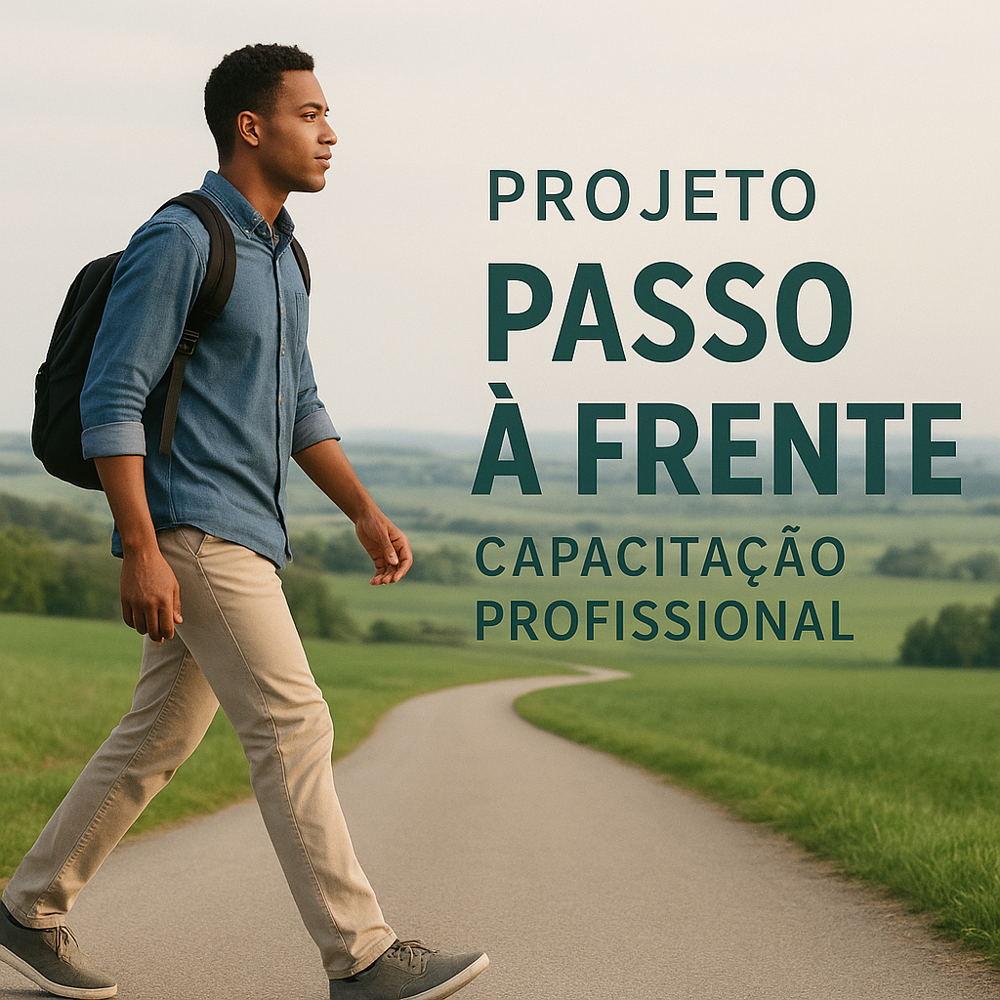
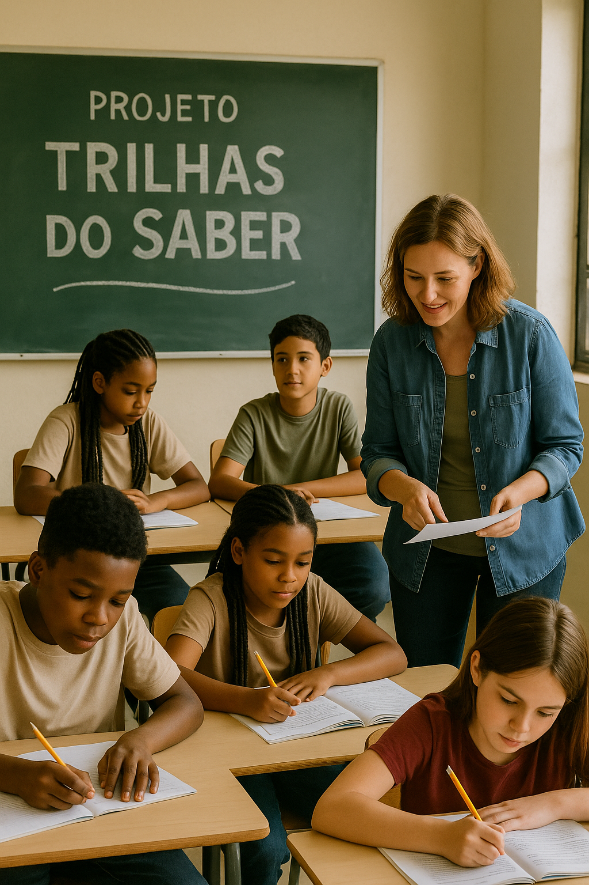
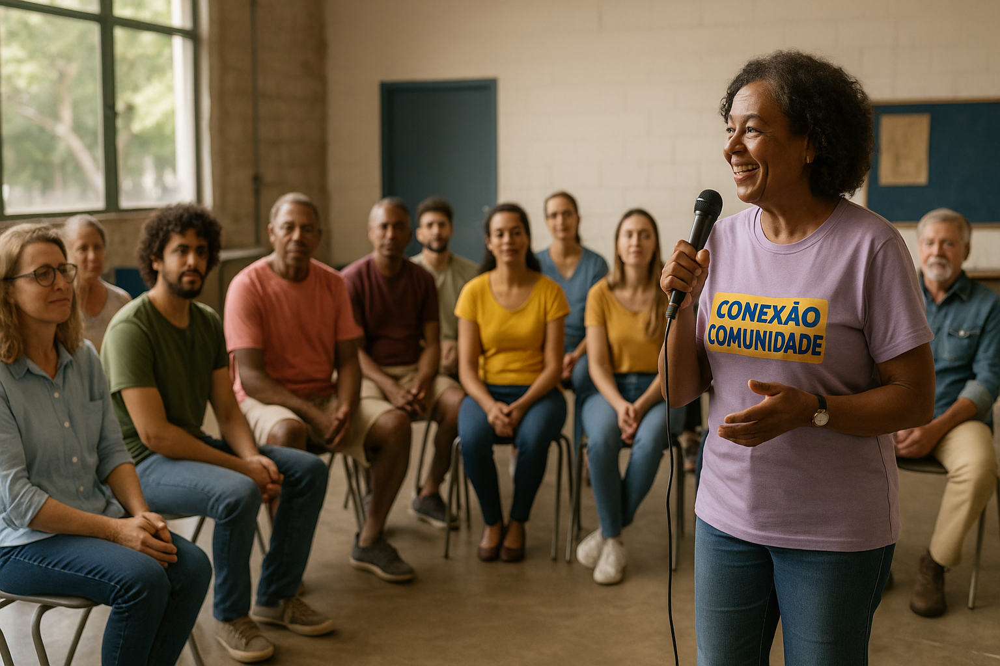

Ofereceremos cursos de capacitação profissional e mentorias para inserção no mercado de trabalho, assim aumentamos as oportunidades de empregabilidade para pessoas em situação de vulnerabilidade.
Detalhes Avançados: Capacitação de 800 participantes com habilidades técnicas e comportamentais no ambiente de trabalho, e junto a empresas parceiras vinculamos 600 dessas pessoas ao mercado de trabalho.
Indicadores: 80% dos participantes ingressaram no mercado de trabalho.

Projeto Trilhas do Saber
Foco e impacto do projeto: Promovemos atividades de reforço escolar e oficinas socioeducativas,contribuindo na melhora do desempenho escolar e reduzindo a evasão entre crianças e adolescentes. Oferecermos aulas de reforço em disciplinas básicas,avançadas e EJA.
Detalhes Avançados: Reduzimos a evasão escolar em 35% no último ano e pretendemos dobrar a meta e alcançar maior parte da comunidade.

Projeto Conexão Comunidade
Em nossos espaços de convivência, promovemos eventos, cursos e rodas de conversa que fortalecem os vínculos sociais e incentivam a cidadania ativa. Por meio de grupos de apoio, atividades culturais e esportivas, criamos oportunidades para que diferentes públicos se encontrem, compartilhem experiências e construam soluções coletivas para desafios da comunidade.
Detalhes Avançados: O Projeto Conexão Comunidade impactou mais de 1.200 pessoas em um ano, com 40 encontros entre rodas de conversa, cursos e eventos culturais e esportivos. A pesquisa com participantes mostrou que 88% sentiram maior senso de pertencimento e 65% ampliaram suas redes de apoio. Foram firmadas 12 novas parcerias locais, fortalecendo ações e ampliando o alcance do projeto, que superou suas metas e se tornou referência em inclusão social e participação cidadã.

Projeto Viver com Saúde
Projeto lançado há menos de dois meses, com o intuito de promover ações de prevenção, cuidado e orientação em saúde, resultano na melhora da qualidade de vida e reduzindo riscos de doenças na comunidade atendida. Tendo como seu principal objetivo realizar campanhas de saúde preventiva com foco em alimentação, atividade física e bem-estar.
Detalhes Avançados: Em dois meses de atuação, o Projeto Viver com Saúde realizou 40 atendimentos diretos à comunidade, oferecendo orientações sobre alimentação, atividade física e cuidados preventivos. Com o crescimento da procura e a ampliação das ações, a meta é atingir mais de 600 atendimentos nos próximos seis meses, consolidando o projeto como referência em promoção da saúde e bem-estar comunitário.